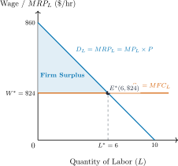
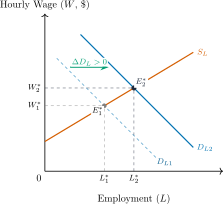
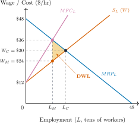

12 Chapter 12: Factor Markets, Labor Demand, and Wage Determination
This chapter examines how prices and quantities are determined in factor markets, with a focus on labor demand, labor supply, and wage determination. Students learn why factor demand is derived from product demand via the Marginal Revenue Product of Labor (\(MRP_L\)), how the work–leisure trade-off shapes labor supply and competitive market equilibrium, and how monopsony employer power alters wages, employment, and the effects of minimum wage floors. Each section progresses from plain-English intuition to coordinate geometry, algebra-first problem solving, and an optional calculus extension.
12.1 Derived Demand and Marginal Revenue Product of Labor
Conceptual Introduction
Up to this point, we have studied product markets, where households buy finished goods and services from businesses. Now we turn to the bottom half of the Circular Flow diagram to examine factor markets, where businesses hire the four inputs of production—labor, land, capital, and entrepreneurship—from households. Unlike pizza or concert tickets, firms do not hire workers for the personal enjoyment of watching people work; a company hires software engineers, nurses, or baristas solely because customers want to buy the goods and services those workers help produce. Economists therefore call factor demand a derived demand—it is derived directly from consumer demand in the output market.
How does a profit-maximizing firm decide exactly how many workers to hire? Holding capital and technology fixed in the short run (ceteris paribus), the firm applies the marginal principle from Chapter~1, comparing the extra dollar revenue generated by hiring one additional worker against the extra dollar cost of employing that worker:
- Marginal Revenue Product of Labor (\(MRP_L\)): The additional total revenue a firm earns by hiring one more unit of labor. For a firm selling output in a competitive product market at a constant price \(P\), \(MRP_L\) equals the worker’s physical output contribution (Marginal Product of Labor, \(MP_L\)) multiplied by the selling price of the product: \(MRP_L = MP_L \times P\).
- Marginal Factor Cost (\(MFC_L\)): The additional total cost incurred by hiring one more unit of labor. In a competitive labor market where the firm is a wage taker, \(MFC_L\) simply equals the going market wage rate \(W\).
Because diminishing marginal returns cause \(MP_L\) to fall as additional workers share a fixed stock of tools, machines, or floor space, the firm’s \(MRP_L\) curve slopes downward—and serves directly as the firm’s labor demand curve (\(D_L\)). As long as an extra worker brings in more revenue than they cost (\(MRP_L > W\)), hiring that worker raises profit. A wage-taking firm therefore hires workers up to the point where \(MRP_L = W\) (or, for indivisible workers, stops at the last worker for whom \(MRP_L \ge W\)).
Students often mix up Marginal Product of Labor (\(MP_L\)), measured in physical units (bags of coffee, haircuts, or lines of code), with Marginal Revenue Product of Labor (\(MRP_L\)), measured in dollars. A profit-maximizing firm compares dollars to dollars (\(MRP_L\) against the dollar wage \(W\)). Even if a worker’s physical productivity \(MP_L\) stays unchanged, a surge in the product’s selling price \(P\) raises \(MRP_L\) and expands the firm’s willingness to hire. Note also our simplifying assumption: when a firm sells in a competitive product market, \(MRP_L = MP_L \times P\); if the firm instead has market power in its output market (like a monopoly), selling extra units lowers price, so \(MRP_L = MP_L \times MR < MP_L \times P\).
Visual Representation
Figure 1 illustrates a competitive firm’s downward-sloping labor demand curve (\(D_L = MRP_L = 60 - 6L\)) intersecting the horizontal market wage line (\(W^* = \$24\)) at the profit-maximizing employment level \(L^* = 6\) workers, assuming competitive product and labor markets with fixed short-run capital.

Because labor demand is \(MRP_L = MP_L \times P\), changes in technology or product demand shift hiring in predictable directions depending on whether new capital complements or substitutes for workers:
- Capital–Labor Complements (\(MP_L \uparrow\)): When generative AI coding assistants help software engineers debug and ship more code per hour, or when surging enterprise demand raises cloud software prices (\(P \uparrow\)), each engineer’s \(MRP_L\) increases. The firm’s labor demand curve shifts rightward, putting upward pressure on equilibrium wages and hiring.
- Capital–Labor Substitutes: Conversely, when automated self-checkout kiosks perform routine checkout tasks at lower unit cost than human cashiers, firms substitute capital for manual checkout labor, shifting demand for routine cashier roles leftward.
Thus, technological innovation does not affect all workers identically: it tends to raise demand for workers whose skills complement the new technology while reducing demand for workers whose tasks are directly automated.
Mathematical Foundation (Algebra Level)
For a competitive firm selling output at constant price \(P\) and hiring labor at market wage \(W\):
\[ MP_L = \frac{\Delta Q}{\Delta L}, \qquad MRP_L = MP_L \times P, \qquad \text{Hiring Rule: } MRP_L = W \]
In Figure 1, setting \(MRP_L = 60 - 6L\) equal to \(W^* = 24\) yields \(6L = 36 \implies L^* = 6\) workers, and the firm’s net hourly surplus above total wage payments is the triangle area \(\frac{1}{2} \times 6 \times (\$60 - \$24) = \$108\).
Problem: A specialty coffee roaster sells bags of roasted beans in a competitive market for \(P = \$15\) per bag and hires packaging technicians in a competitive labor market at a daily wage of \(W = \$180\) per worker. Holding roasting equipment fixed in the short run, the firm’s daily output schedule is: \(Q(0) = 0\), \(Q(1) = 20\), \(Q(2) = 38\), \(Q(3) = 52\), \(Q(4) = 62\), and \(Q(5) = 68\) bags. Compute \(MP_L\) and \(MRP_L\) for each worker, determine the profit-maximizing number of technicians to hire, and calculate the firm’s net daily surplus above wages.
Step-by-Step Solution:
- Build the Productivity and Revenue Schedule (\(MP_L = \Delta Q / \Delta L\) and \(MRP_L = MP_L \times \$15\)): \begin{center}
\end{center}
Apply the Marginal Hiring Rule (\(MRP_L \ge W\)):
Workers 1, 2, and 3 generate \(\$300\), \(\$270\), and \(\$210\) in additional revenue—each strictly exceeding the \(\$180\) daily wage.
Worker 4 generates only \(\$150 < \$180\), which would reduce daily profit by \(\$30\).
Calculate Net Daily Surplus Above Wages: Sum the positive marginal gains across the three hired technicians (or subtract total wage cost from total revenue):
\[ \text{Net Surplus} = \$120 + \$90 + \$30 = \mathbf{\$240} \qquad \bigl(\text{Check: } 52 \times \$15 - 3 \times \$180 = \$780 - \$540 = \$240\bigr) \]
Conclusion: The roaster should hire \(L^* = 3\) technicians, earning a net daily surplus above wages of \(\$240\).
Note for Economics Majors and Quantitative Students: Let short-run output be a differentiable production function \(Q(L)\) with fixed capital and fixed cost \(F\). A firm that is a price taker in both product (\(P\)) and labor (\(W\)) markets chooses \(L \ge 0\) to maximize profit \(\pi(L) = P \cdot Q(L) - W \cdot L - F\). Setting the first derivative to zero gives:
\[ \frac{d\pi}{dL} = P \cdot Q'(L) - W = 0 \implies MRP_L \equiv P \cdot MP_L = W \]
The second-order sufficient condition for a local maximum requires \(\frac{d^2\pi}{dL^2} = P \cdot Q''(L) < 0\), which holds whenever the firm operates in the region of diminishing marginal product (\(Q''(L) < 0\)). For example, if \(Q(L) = 24L - 1.5L^2\), \(P = \$10\), and \(W = \$90\), then \(MP_L = 24 - 3L\) and \(MRP_L = 240 - 30L = 90 \implies L^* = 5\), with \(Q''(L) = -3 < 0\). If the firm instead has market power in the product market with revenue \(R(Q(L))\), the chain rule gives \(MRP_L = \frac{dR}{dQ}\frac{dQ}{dL} = MR(Q) \cdot MP_L\).
12.2 Labor Supply and Competitive Market Equilibrium
Conceptual Introduction
While firms form the demand side of the labor market, individual workers form the labor supply side. Every worker faces a fundamental time trade-off between paid work (which generates income to buy consumption goods) and leisure (time spent resting, studying, or caring for family). The opportunity cost of an hour of leisure is the hourly wage \(W\) you give up by not working.
When the market wage rises, two competing behavioral forces tug on an individual worker’s desired hours:
- The Substitution Effect: A higher wage makes every hour of leisure more expensive in terms of foregone earnings, motivating the worker to substitute away from leisure and work more hours.
- The Income Effect: A higher wage makes the worker wealthier; assuming leisure is a normal good, higher income encourages the worker to ``buy’’ more leisure and work fewer hours.
Across an entire occupation or industry, however, higher wages attract new entrants from other jobs, encourage students to pursue training in that field, and draw non-participants into the workforce. Consequently, the market labor supply curve slopes upward. Competitive equilibrium wage \(W^*\) and employment \(L^*\) settle where market labor supply equals market labor demand (\(L_d = L_s\)). Shifts in labor supply (caused by demographic trends, training or licensing requirements, wages in alternative occupations, or non-wage job amenities) and shifts in labor demand (caused by output demand or productivity) explain why equilibrium wages vary widely across occupations—including human capital premiums for advanced training and compensating wage differentials for hazardous or unpleasant work.
If a neurosurgeon earning \(\$400\) per hour receives a raise to \(\$500\) per hour, she might choose to work fewer hours so she can spend Fridays with her family—meaning her individual labor supply curve can bend backward at very high wages when the income effect outweighs the substitution effect. That does not mean the market supply curve for an occupation slopes downward! Even if some current workers trim hours, higher occupational wages draw new applicants from other careers and schools, keeping the competitive market supply curve upward-sloping.
Visual Representation
Figure 2 shows a competitive labor market where an increase in derived labor demand (shifting rightward from \(D_{L1}\) to \(D_{L2}\), holding labor supply fixed ceteris paribus) raises the equilibrium wage from \(W_1^*\) to \(W_2^*\) and expands employment from \(L_1^*\) to \(L_2^*\).

As the U.S. population ages, demand for hospital and outpatient healthcare services has grown steadily—shifting the derived demand for registered nurses (\(D_L\)) rightward. Because becoming a licensed registered nurse requires years of nursing coursework, clinical rotations, and state board examinations, the short-run market supply of nurses (\(S_L\)) is steep (inelastic). When \(D_L\) shifts rightward against a steep short-run supply curve, equilibrium wages jump sharply and hospitals compete through sign-on bonuses and travel-nurse premiums. Over the long run, those higher wages attract larger nursing school enrollments, making long-run supply flatter and moderating wage pressure over time.
Mathematical Foundation (Algebra Level)
Under linear labor demand and supply schedules, competitive market equilibrium solves \(L_d(W^*) = L_s(W^*)\) (equivalently, setting inverse demand equal to inverse supply, \(W_d(L^*) = W_s(L^*)\)):
\[ L_d(W^*) = L_s(W^*) \iff W_d(L^*) = W_s(L^*) \]
Problem: In a competitive metropolitan market for certified electricians, labor demand is \(L_d = 1{,}200 - 15W\) and labor supply is \(L_s = 200 + 10W\), where \(W\) is the hourly wage in dollars and \(L\) is the number of employed electricians.
- Find the initial equilibrium hourly wage \(W_1^*\) and equilibrium employment \(L_1^*\).
- Suppose major commercial solar and grid-electrification projects expand derived demand by \(250\) electricians at every wage, so \(L_{d2} = 1{,}450 - 15W\). Holding supply constant, find the new equilibrium \((W_2^*, L_2^*)\).
Step-by-Step Solution:
- Initial Equilibrium (\(L_d = L_s\)):
\[ 1{,}200 - 15W_1^* = 200 + 10W_1^* \implies 1{,}000 = 25W_1^* \implies W_1^* = \mathbf{\$40\text{ per hour}} \]
Substitute \(W_1^* = \$40\) into either curve (checking both confirms accuracy):
\[ L_1^* = 200 + 10(40) = \mathbf{600\text{ electricians}} \qquad \bigl(\text{Check: } 1{,}200 - 15(40) = 600\bigr) \]
- New Equilibrium After the Rightward Demand Shift (\(L_{d2} = L_s\)):
\[ 1{,}450 - 15W_2^* = 200 + 10W_2^* \implies 1{,}250 = 25W_2^* \implies W_2^* = \mathbf{\$50\text{ per hour}} \]
Substitute \(W_2^* = \$50\) into the supply curve:
\[ L_2^* = 200 + 10(50) = \mathbf{700\text{ electricians}} \qquad \bigl(\text{Check: } 1{,}450 - 15(50) = 700\bigr) \]
Conclusion: The market initially clears at \(\$40/\text{hr}\) and \(600\) electricians. The \(+250\)-worker demand shift raises the equilibrium wage by \(\$10/\text{hr}\) (to \(\$50/\text{hr}\)) and expands employment by \(100\) electricians (to \(700\)).
Note for Economics Majors and Quantitative Students: At any competitive equilibrium \((W^*, L^*)\), the wage elasticities of labor supply and labor demand are defined as:
\[ \varepsilon_{L,s} = \frac{dL_s}{dW}\cdot\frac{W^*}{L^*}, \qquad \varepsilon_{L,d} = \frac{dL_d}{dW}\cdot\frac{W^*}{L^*} \]
In the electrician baseline (\(W_1^* = \$40\), \(L_1^* = 600\)), \(\varepsilon_{L,s} = 10 \times \frac{40}{600} = \frac{2}{3} \approx 0.67\) (inelastic supply) and \(\varepsilon_{L,d} = -15 \times \frac{40}{600} = -1.00\) (unit-elastic demand). For linear schedules \(L_d(W,\alpha) = \alpha - bW\) and \(L_s(W) = c + dW\) (\(b,d > 0\)), differentiating the equilibrium identity \(\alpha - bW^*(\alpha) = c + dW^*(\alpha)\) with respect to the demand shifter \(\alpha\) yields:
\[ \frac{dW^*}{d\alpha} = \frac{1}{d + b} > 0, \qquad \frac{dL^*}{d\alpha} = \frac{d}{d + b} \in (0, 1) \]
With \(b = 15\) and \(d = 10\), \(\frac{dW^*}{d\alpha} = \frac{1}{25} = 0.04\) and \(\frac{dL^*}{d\alpha} = \frac{10}{25} = 0.40\), so \(\Delta\alpha = +250\) produces \(\Delta W^* = +\$10/\text{hr}\) and \(\Delta L^* = +100\) workers. Smaller \(d\) (steeper short-run supply, as in licensed nursing) makes \(\frac{dW^*}{d\alpha}\) larger and \(\frac{dL^*}{d\alpha}\) smaller.
12.3 Monopsony Power and Minimum Wage Floors
Conceptual Introduction
What happens when a single dominant employer—such as a rural hospital system, a remote mining company, or a dominant regional distribution hub—is the primary buyer of labor in a local town? Economists call a market with a single buyer (or dominant employer) a monopsony.
Unlike a competitive wage-taking firm, a monopsonist faces the entire upward-sloping local labor supply curve \(W(L)\). To attract one additional worker, the monopsonist must offer a higher wage—and under a uniform-wage payroll (no wage discrimination across identical workers), the firm must pay that new higher wage to all existing employees as well. Consequently, the Marginal Factor Cost of Labor (\(MFC_L\)) lies strictly above the labor supply curve (\(MFC_L > W\)).
To maximize profit, the monopsonist hires workers up to where \(MRP_L = MFC_L\), restricting hiring below the competitive level (\(L_M < L_C\)) and paying a depressed wage read off the labor supply curve (\(W_M < W_C < MRP_L\)). This creates deadweight loss because workers between \(L_M\) and \(L_C\) would produce more revenue (\(MRP_L\)) than the minimum wage they require to work (\(W\)), yet remain unhired. It also produces a striking policy contrast:
- In a competitive labor market, a binding minimum wage set above \(W_C\) raises pay for employed workers but reduces quantity of labor demanded, creating a labor surplus (unemployment).
- In a monopsony labor market, a carefully chosen minimum wage set between \(W_M\) and \(MRP_L(L_M)\) (ideally near \(W_C\)) flattens the employer’s \(MFC_L\) curve over the lower range, which can increase both wages and employment simultaneously up to the competitive level!
Why does hiring one more worker cost a monopsonist more than that worker’s wage? Suppose a rural employer currently hires \(10\) workers at \(\$20/\text{hr}\) (total hourly payroll \(= \$200\)). To attract an \(11\)th worker, the firm must raise the wage to \(\$21/\text{hr}\) for everyone under a uniform pay scale. Total hourly payroll jumps to \(11 \times \$21 = \$231\), so the extra cost of the \(11\)th worker is \(MFC_L = \$231 - \$200 = \mathbf{\$31/\text{hr}}\)—equal to the new worker’s \(\$21\) wage plus a \(\$1/\text{hr}\) raise for each of the \(10\) existing workers.
Visual Representation
Figure 3 plots the linear monopsony model (\(W = 12 + L\), \(MFC_L = 12 + 2L\), and \(MRP_L = 48 - L\), where \(L\) is measured in tens of workers). Equating \(MRP_L = MFC_L\) restricts employment to \(L_M = 12\) (\(120\) workers) and depresses wages to \(W_M = \$24/\text{hr}\), below the competitive benchmark \((L_C = 18,\; W_C = \$30/\text{hr})\).

In a landmark empirical study, economists David Card and Alan Krueger (1994) examined fast-food employment along the New Jersey–Pennsylvania border after New Jersey raised its state minimum wage while neighboring Pennsylvania did not. Rather than finding sharp job losses, they observed little negative impact—and in some specifications slightly higher employment—in New Jersey restaurants. Subsequent labor-market research on regional hospitals, retail chains, and rural warehousing hubs has similarly documented that commuting costs, scheduling constraints, and job-search frictions give many employers meaningful local monopsony power. However, the model also sets a clear boundary: while a moderate wage floor near \(W_C\) can expand both wages and employment under monopsony, pushing a minimum wage well above workers’ Marginal Revenue Product (\(MRP_L\)) will still reduce hiring.
Mathematical Foundation (Algebra Level)
When inverse labor supply is linear, \(W(L) = a + bL\), and the monopsonist pays a single uniform wage to all workers, Total Labor Cost is \(TLC(L) = W(L) \cdot L = aL + bL^2\), and Marginal Factor Cost has the same vertical intercept with twice the slope of labor supply:
\[ MFC_L = a + 2bL, \qquad \text{Monopsony Hiring Rule: } MRP_L = MFC_L \]
Problem: A rural distribution center is a monopsonist facing an inverse labor supply curve \(W = 12 + L\) and Marginal Factor Cost \(MFC_L = 12 + 2L\), where \(W\) is the hourly wage in dollars and \(L\) is employment measured in tens of workers (so \(L = 1\) represents \(10\) workers). Its Marginal Revenue Product of Labor is \(MRP_L = 48 - L\).
- Find the monopsonist’s profit-maximizing employment \(L_M\) and hourly wage \(W_M\).
- Compare this outcome to the competitive benchmark \((L_C, W_C)\) where \(MRP_L = W\), and calculate the hourly deadweight loss (DWL).
- Determine employment and wages if the state imposes a minimum wage of \(W_{\min} = \$30\) per hour.
Step-by-Step Solution:
- Monopsony Employment (\(L_M\)) and Wage (\(W_M\)): Set \(MRP_L = MFC_L\):
\[ 48 - L_M = 12 + 2L_M \implies 36 = 3L_M \implies L_M = \mathbf{12\ (120\text{ workers})} \]
Read the wage off the labor supply curve \(W = 12 + L_M\), and note \(MRP_L\) at \(L_M\):
\[ W_M = 12 + 12 = \mathbf{\$24\text{ per hour}}, \qquad MRP_L(12) = 48 - 12 = \$36\text{ per hour} \]
- Competitive Benchmark (\(L_C, W_C\)) and Hourly Deadweight Loss: Set \(MRP_L = W\):
\[ 48 - L_C = 12 + L_C \implies 36 = 2L_C \implies L_C = \mathbf{18\ (180\text{ workers})}, \qquad W_C = 12 + 18 = \mathbf{\$30\text{ per hour}} \]
Monopsony restricts employment by \(\Delta L = 180 - 120 = 60\) workers, with a vertical gap of \(\$36 - \$24 = \$12/\text{hr}\) at \(L_M\):
\[ \text{DWL} = \frac{1}{2} \times (180 - 120) \times (\$36 - \$24) = \frac{1}{2} \times 60 \times \$12 = \mathbf{\$360\text{ per hour}} \]
- Effect of a \(\$30/\text{hr}\) Minimum Wage Floor: Because the firm cannot pay less than \(\$30/\text{hr}\), its effective Marginal Factor Cost becomes flat at \(MFC_L = \$30\) for every worker willing to work at \(\$30/\text{hr}\)—that is, up to \(L_s(30) = 30 - 12 = 18\) (\(180\) workers). Since \(MRP_L > \$30\) for all \(L < 18\) and \(MRP_L(18) = 48 - 18 = \$30\), the firm hires all \(180\) workers at \(\$30/\text{hr}\).
Conclusion: Monopsony power cuts hiring from \(180\) down to \(120\) workers, depresses wages from \(\$30\) to \(\$24/\text{hr}\), and creates \(\$360/\text{hr}\) in deadweight loss. Setting a minimum wage at \(\$30/\text{hr}\) (or an intermediate level such as \(\$28/\text{hr}\), which raises hiring to \(160\) workers) raises both wages and employment simultaneously; at \(\$30/\text{hr}\), the deadweight loss is completely eliminated.
Note for Economics Majors and Quantitative Students: Let revenue be \(R(L)\) with \(MRP_L = R'(L)\), and inverse labor supply be \(W(L)\) with \(W'(L) > 0\). The monopsonist maximizes \(\pi(L) = R(L) - W(L) \cdot L\). Differentiating with respect to \(L\):
\[ \frac{d\pi}{dL} = R'(L) - \left[ W(L) + L \cdot W'(L) \right] = 0 \implies MRP_L = W(L)\!\left( 1 + \frac{1}{\varepsilon_{L,s}} \right) = MFC_L \]
where \(\varepsilon_{L,s} = \frac{dL}{dW}\frac{W}{L}\) is the wage elasticity of labor supply. Rearranging yields the monopsony wage markdown formula \(\frac{MRP_L - W}{W} = \frac{1}{\varepsilon_{L,s}}\): the less elastic the local labor supply, the wider the gap between a worker’s marginal revenue product and the wage paid. In the worked problem above (\(W = 12 + L\) at \(L_M = 12\), \(W_M = \$24\)), \(\varepsilon_{L,s} = 1 \cdot \frac{24}{12} = 2.0\), confirming \(MRP_L = \$24(1 + \frac{1}{2}) = \$36\) (a \(50\%\) markdown relative to \(W_M\)).